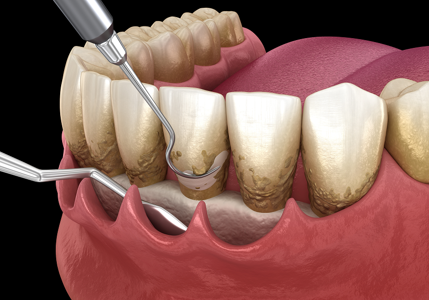

For You
이런 분들께 필요합니다
양치할 때 피가
자주 나는 분
잇몸이 붓고
아프신 분
이가 흔들려
불안하신 분
치료가 무서워
미뤄오신 분

What is it
의식하진정 잇몸치료란
잇몸병(치주질환)은 잇몸과 잇몸뼈가 서서히 무너지는 질환으로, 방치하면 치아가 흔들리고 빠질 수 있습니다. 염증 원인을 제거하고 잇몸 건강을 회복시키는 치료입니다.
통증과 긴장이 걱정되는 분은 진정 요법을 병행해 부담을 줄여 치료받을 수 있습니다. 피와 붓기를 참아온 시간을, 다른 방식으로 끝냅니다.
Treatment Steps
잇몸치료 단계
스케일링
치아 표면의 치석과 플라크를 제거해 염증 원인을 없앱니다.
치근활택술
잇몸 안쪽 깊은 곳의 치석까지 정리해 염증이 가라앉도록 돕습니다.
정기 유지관리
치료 후에도 3~6개월 주기로 관리해 재발을 막습니다.
Why Ansan
왜 안산점의 잇몸치료인가
30년 환자였던 원장이 직접
두려움의 자리를 아는 한지상 대표원장이 직접 진료합니다.
사전 문진 시스템
혈압, 병력 등 전신 상태를 미리 확인한 뒤 진행합니다.
실시간 모니터링
활력 징후를 처음부터 끝까지 확인하며 진행합니다.
Process
진료 과정
상담 및 진단
두려움과 이력을 먼저 듣고, 상태를 함께 확인합니다.
정밀 진단
잇몸뼈 상태와 염증 범위를 정밀하게 확인합니다.
진정 유도
진정제를 투여해 얕은 진정 상태로 유도하며, 모니터링기로 상태를 확인합니다.
잇몸 염증 제거
치석과 염증 조직을 제거해 잇몸을 회복시킵니다.
회복 및 사후 관리
충분히 깬 뒤 귀가하시고, 이후 경과를 정기적으로 봅니다.
Before / After
치료 사례
잇몸 염증 · 치료 후 회복
치석 제거 사례
잇몸 안정화 사례
※ 실제 치료 후 촬영 이미지로 교체 예정 · 치료 효과는 개인에 따라 차이가 있을 수 있습니다.
FAQ
자주 묻는 질문
의식하진정법(수면)이 부담되시나요?+
의식하진정법이 부담되시는 분은 일반 마취로도 진료가 가능합니다. 상담 시 원장님과 함께 원하시는 방식으로 편안하게 결정하실 수 있습니다.
잇몸치료도 아픈가요?+
마취와 진정으로 통증을 줄이며 진행합니다. 염증 정도에 따라 여러 번 나누어 무리 없이 치료하기도 합니다.
마취가 위험하지는 않나요?+
전신마취가 아닌 얕은 진정을 사용하며, 진정 깊이와 활력 징후는 모니터링기를 통해 처음부터 끝까지 실시간으로 관리합니다. 사전 문진으로 개인 상태를 먼저 확인합니다.
회복 시간은 얼마나 걸리나요?+
진정에서 충분히 깬 것을 확인한 뒤 귀가하십니다. 회복 시간은 개인과 시술 범위에 따라 다르며, 상담 시 안내해 드립니다.
비용은 얼마인가요?+
식립 개수와 뼈 상태, 보철 종류에 따라 달라집니다. 정밀 진단 후 개인별 계획과 함께 안내해 드립니다.
사후 관리는 어떻게 하나요?+
식립 후 정기적으로 경과를 확인하며 관리합니다. 원내 디지털 기공소에서 보철을 직접 제작·조정하기 때문에 이후 대응도 빠릅니다.
스케일링만 받으면 잇몸치료가 끝나나요?+
단순 치은염은 스케일링만으로 호전될 수 있지만, 치주염으로 진행된 경우 치근활택술과 꾸준한 유지관리가 함께 필요합니다.
Medical Team
두 명의 원장이, 함께 봅니다

“30년을 환자로 살았습니다.”
한지상 공동 대표원장
의식하진정법 임플란트 · All-on-X 담당

“보이지 않는 정확함을 만듭니다.”
김진희 공동 대표원장
보철 · 심미 담당
잇몸치료의 단계와 관리 방법이 궁금하시다면, 일반진료 잇몸치료를 참고하세요. 일반진료 잇몸치료 보기 →